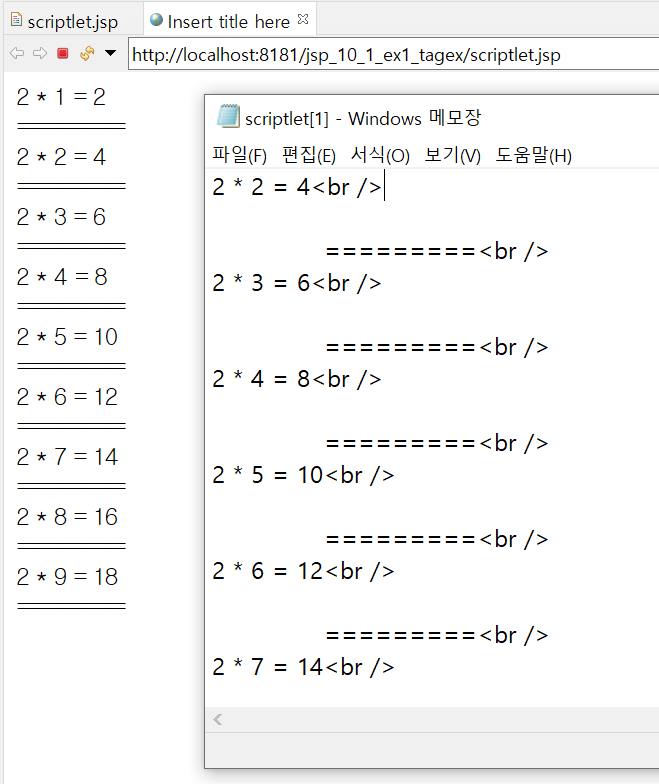
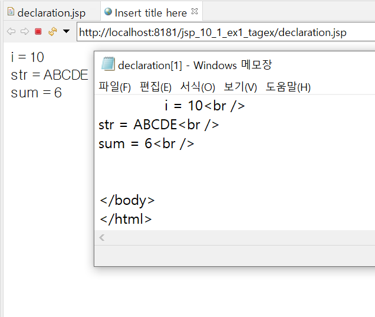
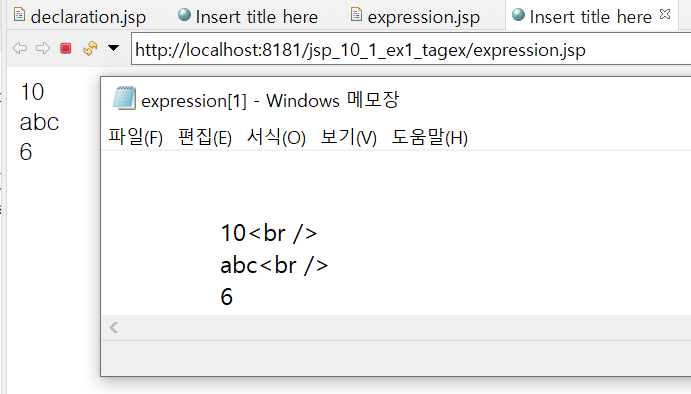
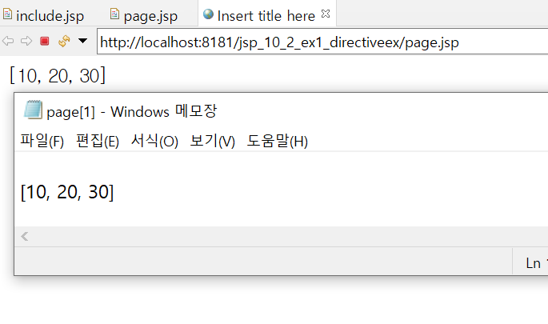
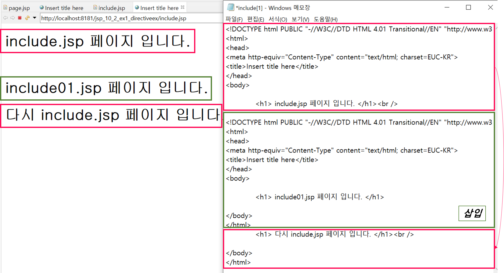
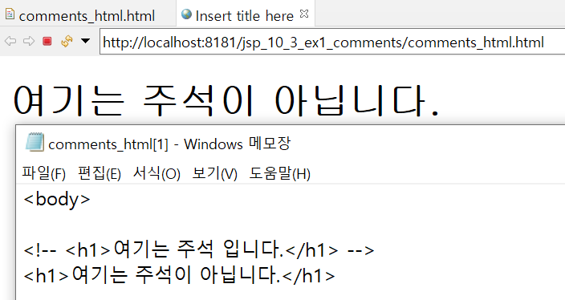
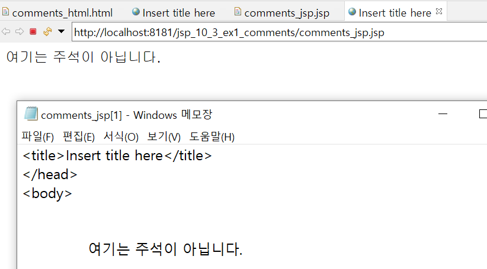

10. jsp 2
0. 목차
Chapter10. JSP 본격적으로 살펴보기-II
Ch10 - 1. 스크립트릿, 선언, 표현식
Ch10 - 2. 지시자
Ch10 - 3. 주석
Ch10 - 1. 스크립트릿, 선언, 표현식
▶ 스크립(scripe)
▷ 스크립트릿, 선언, 표현식 = 스크립
▷ JSP 문서 안에 JAVA 언어를 넣기 위한 방식들
▷ 실제 개발에서 많이 사용
▶ 스크립트릿(scriptlet) : <% java 코드 %>
▷ JSP 페이지에서 JAVA 언어를 사용하기 위한 요소 중 가장 많이 사용되는 요소
▷ 우리가 알고 있는 거의 모든 JAVA 코드를 사용 가능
▷ .jsp가 WAS에 있을 때 코드 ≠ html로 응답되었을 때 코드
scriptlet.jsp// scriptlet.jsp ... <body> <% int i = 0; while(true){ i++; out.println("2 * " + i + " = " + (2 * i) + "<br />"); %> =========<br /> <% if(i >= 9) break; } %> </body> ...- 서버 실행 후

▶ 선언(declaration) : <%! java 코드 %>
▷ JSP 페이지 내에서 사용되는 변수 또는 메소드를 선언할 때 사용
▷ 여기서 선언된 변수 및 메소드는 전역의 의미로 사용
declaration.jsp// declaration.jsp ... <body> <%! int i = 10; String str = "ABCDE"; %> <%! public int sum(int a, int b) { return a+b; } %> <% out.println("i = " + i + "<br />"); out.println("str = " + str + "<br />"); out.println("sum = " + sum(1,5) + "<br />"); %> </body> ...- 서버 실행

▶ 표현식(expression) : <%= java 코드 %>
▷ JSP 페이지 내에서 사용되는 변수의 값 또는 메소드 호출 결과값을 출력하기 위해 사용
▷ 결과값은 String 타입
▷ 세미콜론(;) 사용 불가
expression.jsp// expression.jsp ... <body> <%! int i = 10; String str = "abc"; private int sum(int a, int b) { return a+b; } %> <%= i %><br /> <%= str %><br /> <%= sum(1, 5) %> </body> ...- 서버 실행

Ch10 - 2. 지시자
▶ 지시자 : <%@ 속성 %>
▷ 지시자의 종류
- page : 해당 페이지의 전체적인 속성 지정
- include : 별도의 페이지를 현재 페이지에 삽입
- taglib : 태그라이브러리의 태그 사용
▷ JSP 페이지의 전체적인 속성을 지정할 때 사용
▶ page
▷ 페이지의 속성을 지정할 때 사용
▷ 주로 사용되는 언어 지정 및 import문에 사용
page.jsp// page.jsp <%@page import="java.util.Arrays"%> // 아래 Arrays 사용하기 위해 import문 필요 → page 사용 <%@page language="java" contentType="text/html; charset=utf-8" pageEncoding="utf-8"%> // page 사용 ... <body> <% int[] iArr = {10, 20, 30}; out.println( Arrays.toString(iArr) ); %> </body> ...- 서버 실행

▶ include
▷ 현재 페이지내에 다른 페이지를 삽입할 때 사용
▷ file 속성 이용 : 다른 file 띄움
include.jsp// include.jsp ... <body> <h1> include.jsp 페이지 입니다. </h1><br /> <%@ include file="include01.jsp" %> // include01.jsp 파일을 삽입 <h1> 다시 include.jsp 페이지 입니다. </h1><br /> </body> ...// include01.jsp ... <body> <h1> include01.jsp 페이지 입니다. </h1> </body> ...- 서버 실행

▶ taglib
▷ 사용자가 만든 tag = 태그 라이브러리
▷ 이러한 태그 라이브러리를 사용하기 위해 taglib 지시자 사용
▷ uri 및 prefix 속성이 있음
- uri : 태그라이브러이의 위치 값을 가짐
- prefix : 태그를 가리키는 이름 값을 가짐
Ch10 - 3. 주석
▶ 주석이란?
▷ 실제 프로그램에는 영향이 없음
▷ 프로그램 설명을 목적으로 사용되는 태그
▷ HTML 주석 ≠ JSP 주석 : 각자의 주석 존재
▶ HTML 주석
▷ html = 브라우저에서 실행
▷ 브라우저에서 소스 보기 가능
.html// .html ... <body> <%-- 여기는 주석 입니다. --%> 여기는 주석이 아닙니다. </body> ...- 서버 실행

▶ JSP 주석
▷ jsp = WAS(서버)에서 실행
▷ 브라우저에서 소스 보기 불가
.jsp// .jsp ... <body> <%-- 여기는 주석 입니다. --%> 여기는 주석이 아닙니다. </body> ...- 서버 실행
